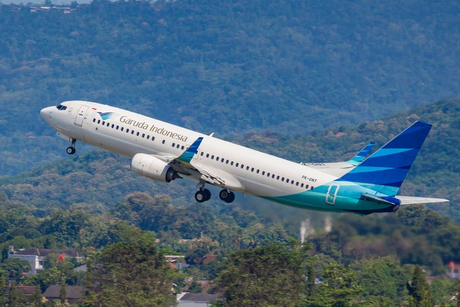

Sejarah Singkat
Travel Kuy adalah perusahaan penyedia jasa penerbangan yang dapat mudah diakses oleh pengguna terutama pengguna smartphone. lahir ditahun 2018 perusahaan ini dibangun yang awalnya hanya pertujuan tour travel di bagian local saja, sekarang Travel Kuy sudah dapat travel dan tour di berbagai negara baik diluar atau pun dilocak |